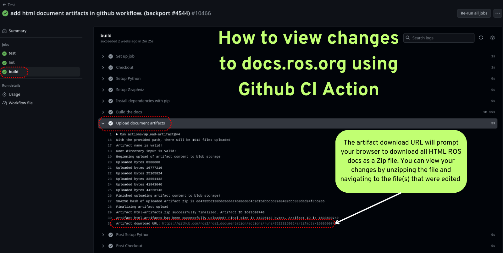
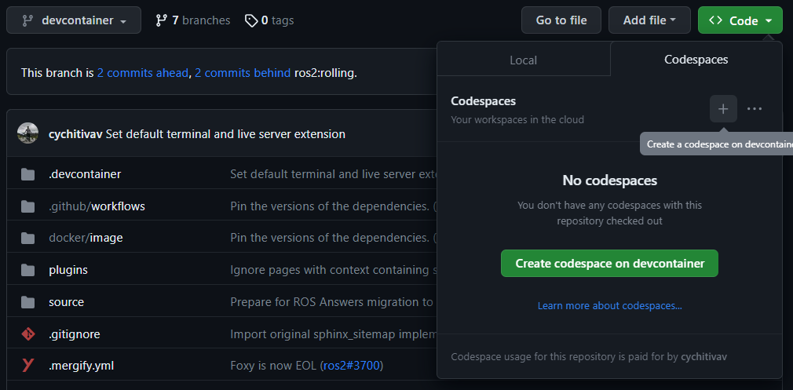
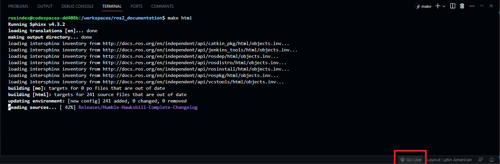
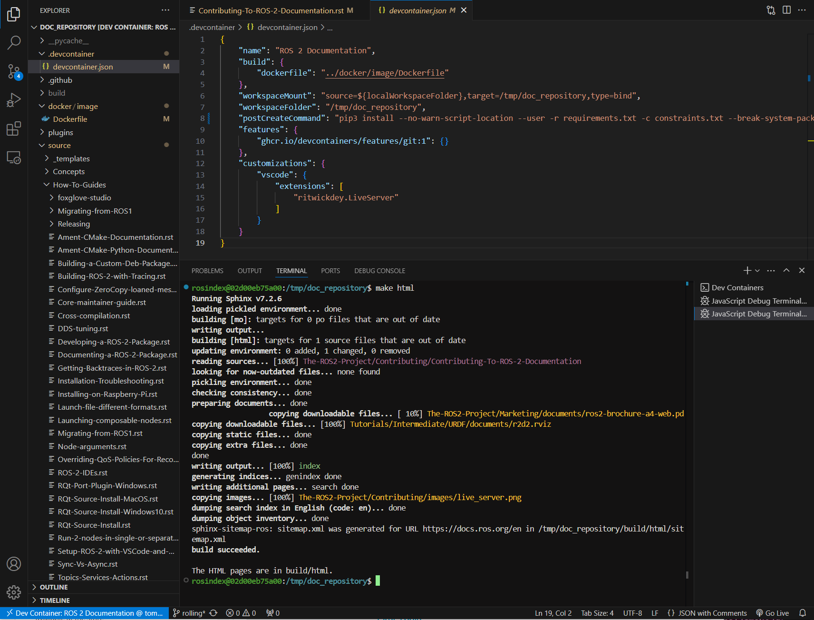

備註
您正在閱讀開發版本的文件。對於最新發行的版本，請參見 Lyrical。
Creating or updating documentation — how-to
Contributing to ROS documentation helps keep guidance accurate, useful, and consistent. This article explains how to plan documentation changes, build the site, run checks, and preview your updates. With this information, you can prepare documentation updates that are ready to review and publish.
Area: contributing, community | Content-type: how-to | Experience: beginner, intermediate, expert
摘要
You can check for open documentation issues in the issues list. You must build and test the documentation site before pushing your changes to GitHub. We recommend that you do this locally, using the available tools in the repository makefile. Alternatively, you can also build and test in GitHub Codespaces, or by using a Devcontainer.
This article relates to contributing to the ROS documentation site. For more information about creating or updating package documentation, see Documenting a ROS 2 package.
先備條件
There are no prerequisites.
步驟
Planning documentation changes
When you see a change to the documentation you'd like to make, we recommend checking the docs issue list to see if your proposed update has already been tracked. You can also check for issues relating to nearby updates you could make to the article at the same time.
If you are creating a new article, decide on the content type for the article before you start.
For more information about the docs source, tools, and workflow to use when making your updates, see Contributing to documentation.
Building the site locally
1 Setting up the documentation tools
Set up the following prerequisites to build the docs site locally:
Create a venv to build the documentation:
$ python3 -m venv ros2doc # create venv $ source ros2doc/bin/activate # activate venv
Install the requirements located in the
requirements.txtfile:$ pip install -r requirements.txt -c constraints.txt
$ pip install -r requirements.txt -c constraints.txt
$ python -m pip install -r requirements.txt -c constraints.txt
Sphinx generates diagrams using the
graphvizlibrary, so make sure that it is installed and available:$ sudo apt update ; sudo apt install graphviz
$ brew install graphviz
Download an installer from the Graphviz Download page and install it. Make sure to allow the installer to add it to the Windows
%PATH%, otherwise Sphinx will not be able to find it.
2 Checking / testing the site
You can run the documentation tests locally (using doc8) with the following command:
$ make test
You can run the Python documentation tools tests locally (using pytest) with the following command:
$ make test-tools
You can run the documentation linter locally (using sphinx-lint) with the following command:
$ make lint
You can run the documentation spell checker locally (using codespell) with the following command:
$ make spellcheck
備註
If the spellcheck command detects a specific word that needs to be ignored, add it to codespell_whitelist.
For more information about spelling checks, see Spelling check.
3 Spelling check
To scan the documentation files and flag any misspellings, run the following command:
$ make spellcheck
If errors are detected, review the suggestions and update the pull request as necessary.
Some words, such as technical terms or proper nouns, may be mistakenly flagged as misspelled. If you encounter such instances, you can add them to the ignore list to prevent them from being flagged in the future. To do this, add the term or noun to the codespell_whitelist file as follows:
empy
jupyter
lets
ws
To include custom corrections that codespell should apply, you can add them to the codespell_dictionary file as follows:
amnet->ament
colcn->colcon
rosabg->rosbag
rosdistroy->rosdistro
To check the dictionaries, run the following command:
$ make check-dictionaries
This command checks the blank lines and leading/trailing spaces in the dictionaries.
If the check-dictionaries command complains about the dictionaries, run the following command:
$ make sort-dictionaries
This command automatically modifies the dictionaries if any issues are found.
4 Checking for broken links
To check for broken links on the site, run the following command:
$ make linkcheck
This will check the entire site for broken links, and output the results to the screen and build/linkcheck.
5 Building the site for the active branch
To build the site for just the current active branch:
Run the following command at the top level of the repository. The build process can take some time. This is the recommended way to test out local changes.
$ make html
In your browser, open
build/html/index.htmlto see the output.
備註
The build runs Sphinx in parallel by default, using one worker per CPU core.
This is handled inside Sphinx (its -j auto option), so it behaves the same
on Linux, macOS, and Windows; a plain make -j does not help, because each
build is a single Sphinx invocation.
To pin the number of workers instead of auto-detecting, set JOBS:
$ make html JOBS=8
6 Building the site for all branches
To build the site for all branches:
At the top level of the repository, from the rolling branch, run the following command.
$ make multiversion
This has two drawbacks:
The multiversion plugin doesn't understand how to do incremental builds, so it always rebuilds everything. This can be slow. Parallel builds still apply within each branch (
make multiversion JOBS=8), but the branches themselves are built one after another.The build process will always check out exactly the branches listed in the
conf.pyfile. This means that local changes will not be shown.
To show local changes in the multiversion output:
Commit the changes to a local branch.
Edit the conf.py file and change the
smv_branch_whitelistvariable to point to your branch.
Using the live server
While working on the ROS documentation, instead of re-running make html and refreshing the browser after every edit, use the live server to watch the source files, rebuild incrementally on save, and serve the result with automatic browser reload.
The live server uses sphinx-autobuild.
Start the live server with:
$ make serve
Open
http://localhost:2022in a browser.
The serve target binds to 0.0.0.0:2022 by default, so the server is reachable through a Devcontainer using port forwarding.
You can override the bind address or port number if needed:
$ make serve LIVE_HOST=127.0.0.1 LIVE_PORT=8080
Viewing the site through GitHub CI
For small changes to the ROS documentation, you can view your changes as rendered HTML using artifacts generated in our GitHub Actions.
The build action produces the entire ROS documentation as a downloadable ZIP file that contains all HTML for docs.ros.org.
This build action is triggered after passing the test action and the lint action.
To download and view your changes:
Go to your pull request and under the title, select the Checks tab.
On the left hand side of the Checks page, select the Test section.
Under the Tests section, select Build to open the build dialog.
In the menu on the right, select Upload document artifacts.
Scroll to the bottom to see the download link for the zipped HTML files under the Artifact download URL heading.
{kind=link}

Building the site with GitHub Codespaces
Before you can build the site with GitHub Codespaces, you need to have a GitHub account (if you don't have one, you can create one for free).
To build the site with GitHub Codespaces:
Go to the ROS 2 Documentation GitHub repository.
On the repository page, from the dropdown menu, select Code > Open with Codespaces.
You are redirected to your Codespaces page, where you can see the progress of the Codespaces creation.

{kind=link}
When this completes, a Visual Studio Code tab is opened in your browser. You can open the terminal by clicking on the Terminal tab in the top panel or by pressing CTRL+J.
In this terminal, you can run any command you want, for example, to build the site for just this branch:
$ make html
To view the site:
Click Go Live in the right bottom panel to open the site in a new tab in your browser.
In your browser, open
build/html/index.html.
{kind=link}

Building the site with Devcontainer
The ROS Documentation GitHub repository also supports a Devcontainer development environment with Visual Studio Code.
This enables you to build the documentation without changing your operating system.
See Setup ROS 2 with VSCode and Docker [community-contributed] to install VS Code and Docker before the following procedure.
Clone repository and start VS Code:
$ git clone https://github.com/ros2/ros2_documentation $ cd ./ros2_documentation $ code .
In VS Code, under Extensions (CTRL+SHIFT+X), install the Remote Development extension.
Use View > Command Palette... or CTRL+SHIFT+P to open the command palette.
In the command palette, search for the command
Dev Containers: Reopen in Containerand execute it. This builds your development docker container for you automatically.In VS Code, open a terminal using View > Terminal or CTRL+SHIFT+` and New Terminal.
Inside the terminal, use the following command to build the documentation:
$ make html
{kind=link}

Making a PR
When you've finished your documentation changes, submit them by making a pull request.